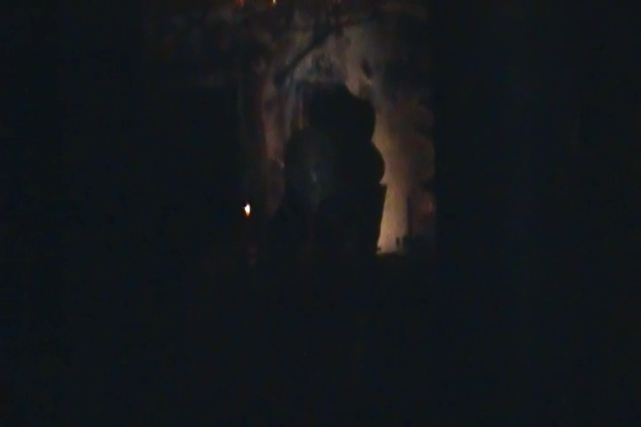
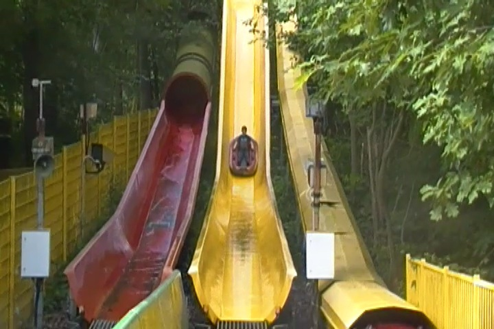

Schlossbeck is a VERY interesting park. Now I know this may seem stupid if you're a local German where apparently, places like Schlossbeck are extremely common. But for this American, its very rare as places like Schlossbeck are essentially...non-existant over here. So what is Schlossbeck like? Well...it's sort of like...it has more in common with your local playground than it does with a major theme park. This is a place that they would never expect anyone from outside the local area to visit. The place is very local. It's a sort of place to just go to have fun. It sort of is like a playground. Now some people will treat Schlossbeck as just a credit whoring stop. However, the credit here is by far the least interesting thing in the park. This place is pretty much self operated. Aside from the credit, none of the rides have operators, and you operate them yourself. And that's if there's even buttons necesarry. Because like I said, a lot of the stuff here is just playground equipment. And honestly, it may be for small kids, but F*CK IT!!! I had a blast here and would totally recommend this place if you just want to be goofy and have a fun time. You will have a blast (provided you're not a stick in the mud or just a die-hard care nothing about credits whore).
It's kind of hard to draw the line as of what counts as a flat ride and what doesn't at Schlossbeck. But by my standards, Schlossbeck does have one interesting Flat Ride. The Luna Loop. It's a self operated ride and from a distance, it looks pretty stupid. It's just a track that goes around in a circle. So what? You just go around in a circle? Seems like a stupid ride for really little kids. But upon closer inspection, there's something...not right. Yep. Those cars are flipping and somersaulting all along the grass. I'm not sure if it automatically flips you or if you control the flipping. All I know is that I was flipping like crazy and I loved every second of the ride as we tumbled in a circle. Highly recommend if you're at Schlossbeck. Make sure you go crazy.
Don't hit the grass you guys. =)
Dark Rides
All right. Now Schlossbeck doesn't seem like the kind of park that you'd see a dark ride in. And for most people, they'd be right. However, they do have a haunted walk through. And screw it. We count those things. It's not exactly scary. In fact, I don't remember much about it. I just remember some really cheap effects that weren't scary at all and then you're let out by this weird...singing animal nursery. It's very odd. So if that sounds like you're thing, go for it.

Were you seriously expecting something scarier than this at a little playground park?
Water Rides
When I was at the park, they had just gotten a couple of Wet'N'Dry Slides. Yeah, it's not exactly something to scream over, but I had fun. And unlike at most parks, this one is self-operated. So that's another feature. And don't worry. You don't get too wet on this one.

It is an enjoyable ride. No need to worry about anything.
Dining
I never ate at Schlossbeck. And it's a playground park. I don't think there's much food here at all.
Theming and Other Attractions
Here are the reviews of all the other stuff at Schlossbeck. And like I've said before, there's no theming at all. So in that category, there's nothing to discuss. But when it comes to other stuff, there's plenty to talk about. Cause like I said, it's a playground park. Anyways, let's talk about the biggest thing to do in the park as well as its star attraction. Boat Jumping. What's that. Simple. You get pulled up a spike, like a boomerang. Then you are released and you fly off into the water. It's simple, and yet, it's a ton of fun. I love it and am really happy that I not only got to do this, but also that it's really popular in small little German parks like Schlossbeck. And that's not the only self-operated ride. There's also the self-operated Zipline over the water that's just a ton of fun. And then we have our playground equipment. There's the teacups, the merry go round, the rope swing, it's all a ton of fun, and sadly, this isn't the sort of stuff you see in American playgrounds anymore. I know they used to be a lot more like that, but then they took out all the fun equipment. Stupid saftey fears. Anyways, it's still here at Schlossbeck and it's a ton of fun to go crazy on. =)
Boat Jumping is AWESOME!!! =)
In Conclusion
Schlossbeck is a fun little park that while it doesn't seem like much when looking at it in the eyes of a traditional theme park, however, it's a ton of fun to visit. Sure, it may be a one and done place if you're just a credit whore and only care about getting that stupid kiddy credit, however, if you want to have fun on some quirky self operated rides and just goof on some playground equipment, then you will have a blast at Schlossbeck. Yes, it may be extremely common throughout Germany and I'm praising just a crappy little park that many roll their eyes at, but screw it. I'm an American and these things are rare. Yes, it may be for younger kids and I'm too old for Schlossbeck. I don't give a f*ck. This place is awesome and I had fun here. I don't think I'll be coming back to Schlossbeck in particular, but I know that there are plenty of other places like Schlossbeck that I'm sure I'll have fun at. It's just a fun little playground park.
Enthusiast FAQs.
*Are there kiddy coaster restrictions? - If you couldn't ride the kiddy coaster here, I wouldn't be reviewing the place.
Tips
*Don't treat Schlossbeck like a credit whoring stop.
*Don't be stupid and hurt yourself.
*Just because you can operate the self-operated rides at Schlossbeck does not mean you are qualified to be a ride operator.